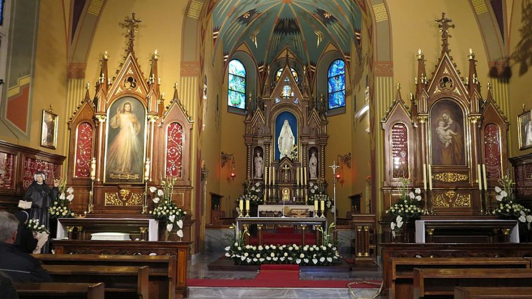

Koronka do Bożego Miłosierdzia

Akt zawierzenia świata Bożemu Miłosierdziu
Boże, Ojcze miłosierny,
który objawiłeś swoją miłość
w Twoim Synu Jezusie Chrystusie,
i wylałeś ją na nas w Duchu Świętym, Pocieszycielu,
Tobie zawierzamy dziś losy świata i każdego człowieka.
Pochyl się nad nami grzesznymi,
ulecz naszą słabość,
przezwycięż wszelkie zło,
pozwól wszystkim mieszkańcom ziemi
doświadczyć Twojego miłosierdzia,
aby w Tobie, trójjedyny Boże,
zawsze odnajdywali źródło nadziei.
Ojcze przedwieczny,
dla bolesnej męki i zmartwychwstania Twojego Syna,
miej miłosierdzie dla nas i całego świata!
Amen.
Jan Paweł II, Kraków-Łagiewniki, 17.08.2002 [4]
KORONKA DO MIŁOSIERDZIA BOŻEGO
(do odmawiania na zwykłej cząstce różańca – 5 dziesiątków)Na rozpoczęcie (3 razy)
O, Krwi i Wodo, któraś wypłynęła z Najświętszego Serca Jezusowego, jako zdrój Miłosierdzia dla nas – Ufamy Tobie.
Ojcze nasz…
Zdrowaś Maryjo…
Wierzę w Boga…
Na dużych paciorkach (1 raz)
Ojcze Przedwieczny, ofiaruję Ci Ciało i Krew, Duszę i Bóstwo najmilszego Syna Twojego, a Pana naszego Jezusa Chrystusa, na przebłaganie za grzechy nasze i całego świata.
Na małych paciorkach (10 razy)
Dla Jego bolesnej męki, miej miłosierdzie dla nas i całego świata.
Na zakończenie (3 razy)
Święty Boże, Święty Mocny, Święty Nieśmiertelny, zmiłuj się nad nami i nad całym światem.
Jezu – ufam Tobie! (3x)
Święta Faustyno, módl się za nami. [1]
Błogosławiony księże Michale Sopoćko, módl się za nami.
Święty Janie Pawle II, módl się za nami.
*Matko Miłosierdzia, módl się za nami.
*Błogosławiony kardynale Stefanie Wyszyński, módl się za nami.
*Błogosławiony księże Jerzy Popiełuszko, módl się za nami.
Imprimatur: kard. Franciszek Macharski, Kraków, 16 lutego 1980 [2]
Bibliografia
- https://www.radiojasnagora.pl/md4-koronka-do-bozego-milosierdzia [dostęp 2026-02-28.]
- https://www.faustyna.pl/zmbm/koronka-do-milosierdzia-bozego/ [dostęp 2026-02-28.]
- https://rzeszow.tvp.pl/48101834/od-dzisiaj-codzienna-transmisja-koronki-do-bozego-milosierdzia-z-lagiewnik [dostęp 2026-02-28.]
- https://www.misericordia.eu/pl/Akt-zawierzenia-swiata-Bozemu-Milosierdziu/ [dostęp 2026-02-28.]